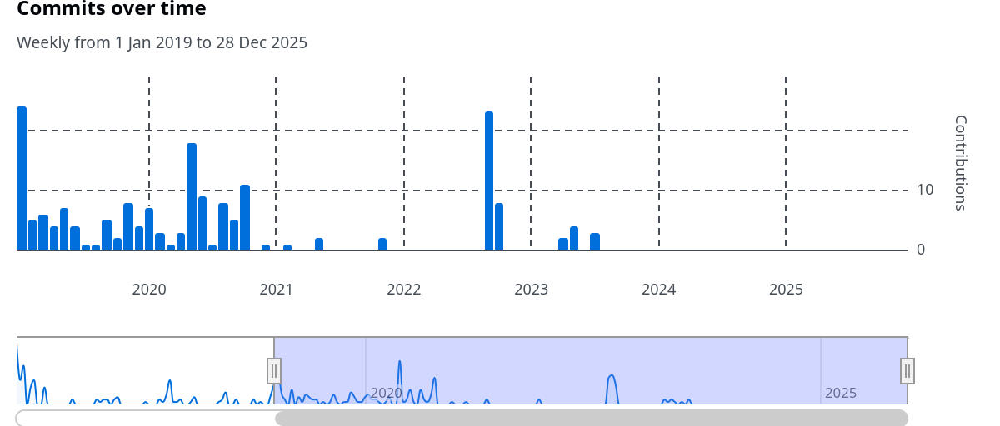
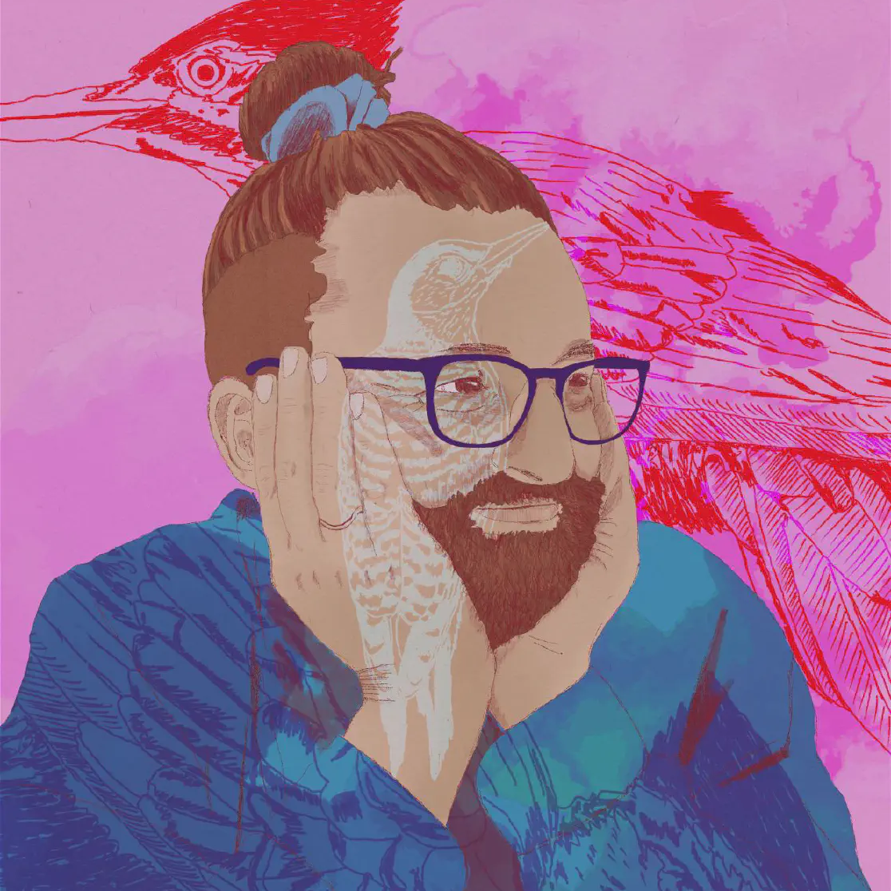
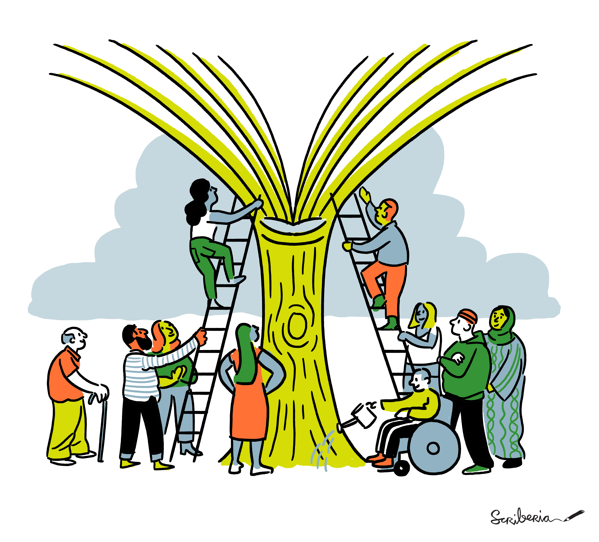

Self-Raising Lazarus:
All Contributors
The Raising of Lazarus , circa 1310, Duccio di Buoninsegna, egg tempera and gold. This
work is public domain.
Peter Capaldi
at the Glasgow Film Theatre. CC BY-SA 2.0
You're looking at ******* Lazarus, sweetheart. And not just plain
Lazarus. I'm ******* self-raising Lazarus, right?
- Confusing title?
- The Raising of Lazarus was one of Jesus' miracles
- Resurrected his friend Lazarus, who had been dead for four days
- In English-speaking countries, self raising flour, is flour with a leavening agent included
- Quote from Malcom Tucker, a sinister government spin doctor in The Thick of It
> What? Do you think I can't get it up anymore? Is that it?
> You're looking at fucking Lazarus, sweetheart.
> And not just plain Lazarus. I'm fucking self-raising Lazarus, right?
- So, I'm going out on a limb with a joke, which is really stolen from TV, and requires knowledge of gospel, bakery (in English!)
- But I always loved this quote, and I was reminded of it when thinking about how open source projects can survive a death
This is a story about …
Goat heard by Scriberia ,
CC-BY 4.0
10.5281/zenodo.13882307
- This is a story about,
- open source in the small
- community project
- no commercial backers
- about the struggles of small team of volunteers
- about the natural turnover of contributors
When we are volunteers, it is rare for someone to stay forever
- Some unoriginal observations about the challenges of open source development
- But also the joy and hope, in how open source projects can survive death
Me
I am
- Jim
- Love free and open source software, and everything open
- Work as a RSE at the Turing, UK
- Steering committee member, and working group chair for _The Turing Way_
- Newly a Jupyter Book and MySTMD contributor
- Newly a maintainer of All Contributors
All Contributors
What is it?
A specification
A set of tools
A GitHub bot
- A project about recognising the different types of contributions people make to our open source projects
- A specification
- Outlining a system for recognising contributors, and all types of contributions
- Enforcing that this is displayed prominently
- Linking back to a profile or site related to the contributor
- Display the category of contribution, with a flexible taxonomy
- **Does not** encourage or specify a way to indicate the *level* of contribution
Encourages recognition of all contributions and discourages the exclusion of contributors due to the perceived level of contribution
- A set of tools
- CLI for managing contributor record
- Library for building related tools
- A GitHub bot
- To simplify and accelerate contributor record maintenance
- Encourage contributors to nominate themselves
- All through GitHub comments
All Contributors
Who uses it?
Projects who
care deeply about acknowledgement
are not represented by commit history
are adjacent to academia
have a significant web output
- care deeply about acknowledgement
- other metrics or systems don't meet their needs
- commit history doesn't represent the effort contributors make
- Particularly in academic-adjacent projects,
Where there has been concerns about acknowledgement and effort to make more fair taxonomies
- Particularly in projects with a significant web output, where the generation of an HTML table is a benefit
What happened?
Ominous Clouds
No new releases
Longstanding bugs and requestsLittle engagement

- No new releases
- Longstanding bugs or rough edges
- Lack of development activity
- Issues with no response
What happened?
Small team
- Small maintainer team
- Other commitments took precedence, or simply moved on
What happened?
Bus factor
GitHub
< 5 (fewer active)
Domain and DNS
1!
Hosting
1!
- Small bus factor for
- GitHub org
- Domain and DNS (one person!)
- Hosting (Netlify) (one person!)
Resurrection
The Catalyst
- Website goes down
- https://fosstodon.org/@leahawasser/114944374870973133
- Leah help drive coordination of a new maintainer team
Resurrection
Forming an new maintainer team

- Convened a loose team
- Danny
- Filipe (fi-lee-pay)
- Josh
- Leah (like Star Wars!)
- Maximilian
- And support from creator/maintainer Jake
- Opened discussions
- Organise synchronous calls
- Planning for chat (Slack, Discord, …)
Resurrection
Docs
Governance maintainers by
Scriberia , CC-BY 4.0
10.5281/zenodo.13882307
- Why docs
- Face of the project
- A good way to learn more as a maintainer
- It was fragile, the site had already gone down
- How many users learn about the project, or interact with it (instructions for the bot, table of contribution types)
First steps
Making changes
Clean code by
Scriberia , CC-BY 4.0
10.5281/zenodo.13882307
- Docs were built using Docusaurus
- More than one major version behind
- Decided to use this as an opportunity to switch to Astro
First steps
Building Resilience

Book Dash collaboration by
Scriberia , CC-BY 4.0
10.5281/zenodo.13882307
- Larger maintainer team on GH
- Domain transferred, now with more than one person able to adjust records
- Netlify team to manage hosting with multiple maintainers
Where we are now
The site
Back online, back under control
Improved bus factor
GitHub
9 (3 admins)
Domain and DNS
2
Hosting
5
Lost translations
- Site is live
- Using current tools
- More resilient
- Maintainer team on Github
- We have lost translations in the migration
- As files were moved about, and updates were made at the same time,
it will take some effort to revise the old translations and adapt them
- That is a lot of work that has been lost
- Redirects?
- However, was this bikeshedding?
- There have been no bug fixes or enhancements to the tools
Where we are now
Our priorities
Readable code by
Scriberia , CC-BY 4.0
10.5281/zenodo.13882307
- bot (deps, latest version of CLI)
- translations (new site structure)
- restructure to library, which CLI and bot use
- new features and community wanted changes
- Challenges
- Difficult to pick up a large(ish) codebase as a new contributor
- Team needs to do some work to get more familiar with JS
Lessons
If there is a community , a project can live
Build in resilience
Focus on what you can contribute
Work together, with a plan
Beware of bike-shedding
- If there is a community, a project can survive
- Build resilience into your team
- Bus factor
- Do what you can, all contributions are valuable
- Don't worry too much about what you can't do
- That doesn't just mean what you are technically able to do,
but also what you have time and capacity for
- Work together and have a plan
- But
- Be careful about bike-shedding
- Focus on what is really valuable
Thanks
Leah Wasser
All (All Contributors) contributors,
past and present
The Turing Way communityScriberia